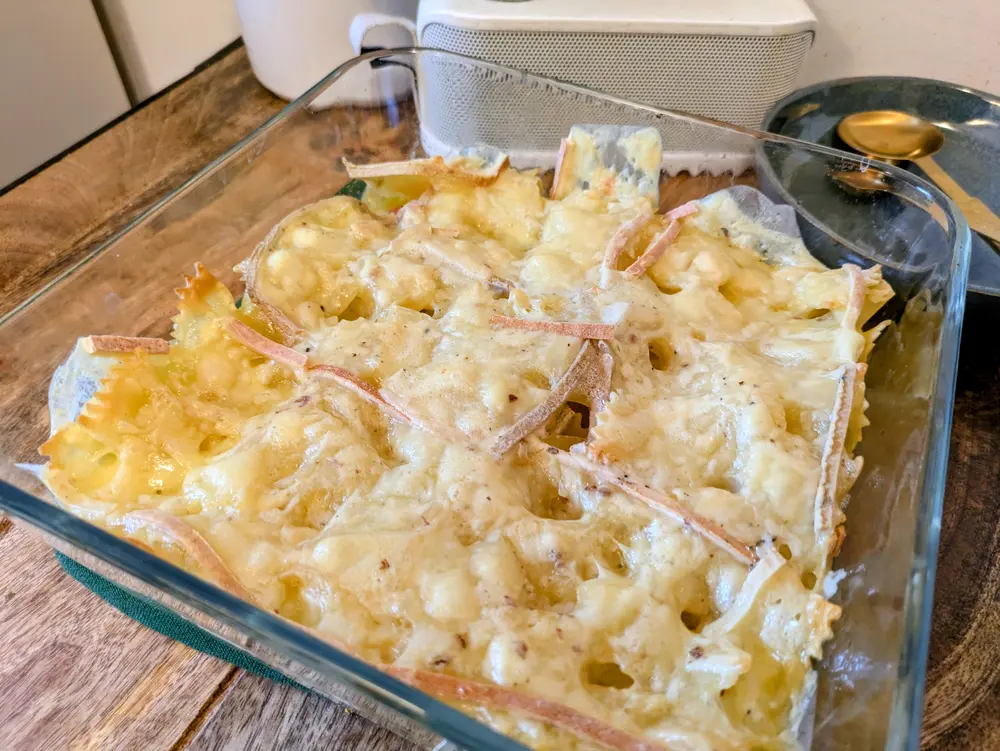

Recipe | Gratin de pâte raclette

Gratin de pâte raclette
Ingredients
For 2 people:
- 200g pasta
- 1 big tomato
- 1 pod garlic
- herbs (sage, rosmarin, basil)
- salt/pepper
- ~6 slices of raclette cheese
- butter
Steps
- Cook the pasta
- Cut the tomato, season it and put it at the bottom of the tray (you can also set 1/2 aside to be eaten fresh)
- Add the pasta, garlic, some butter and cover with raclette cheese
- Bake for ~20 minutes in the oven at 180°C